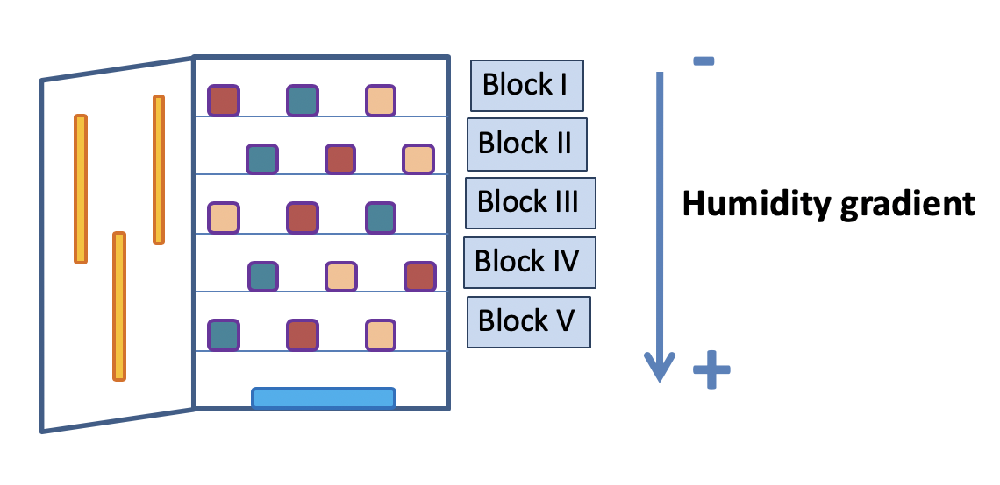
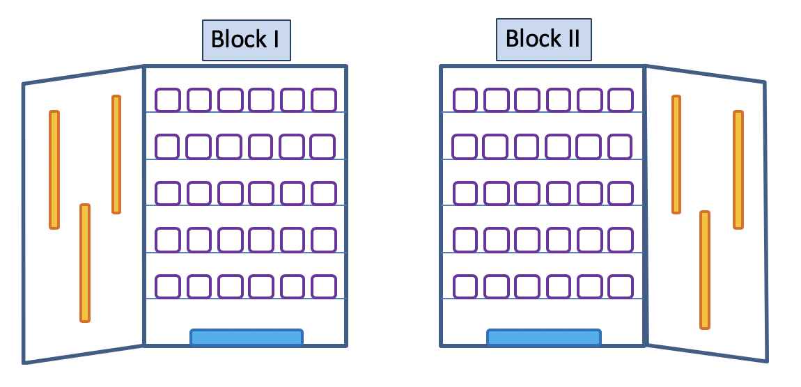
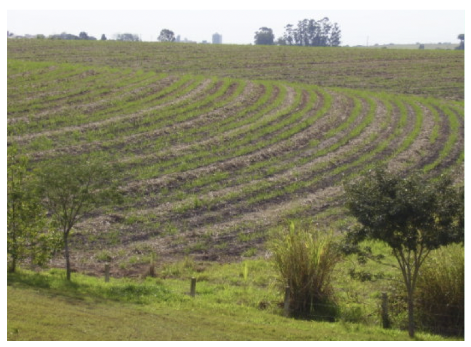
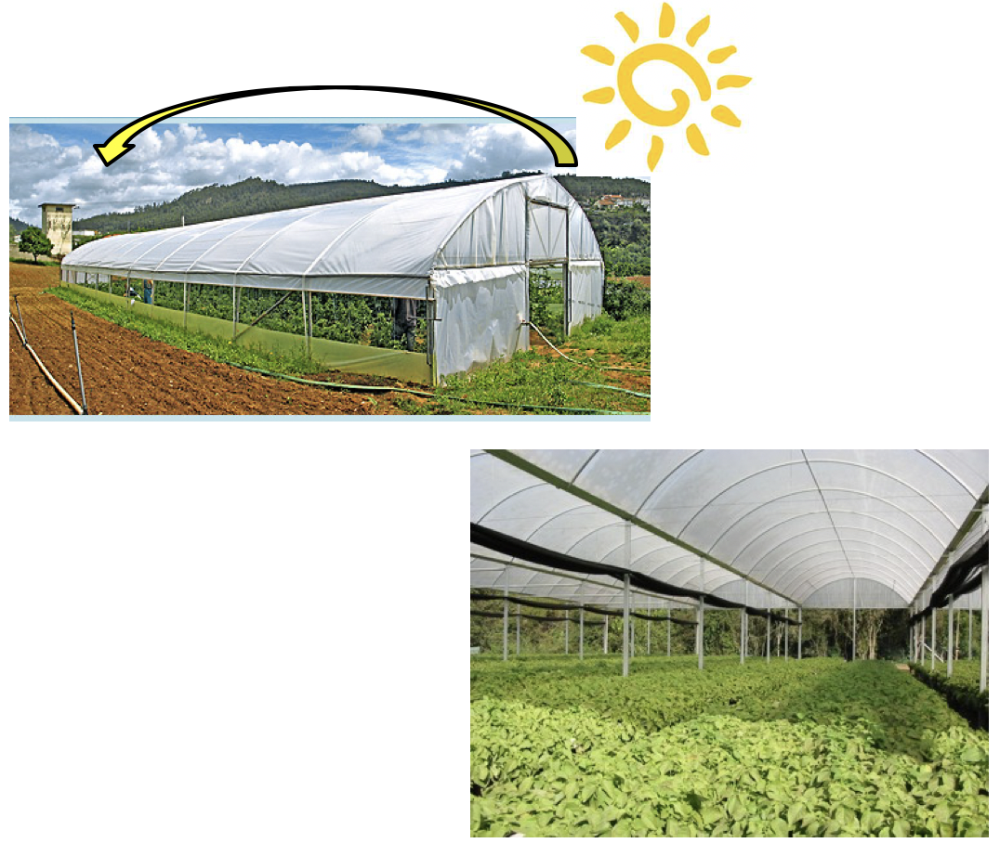
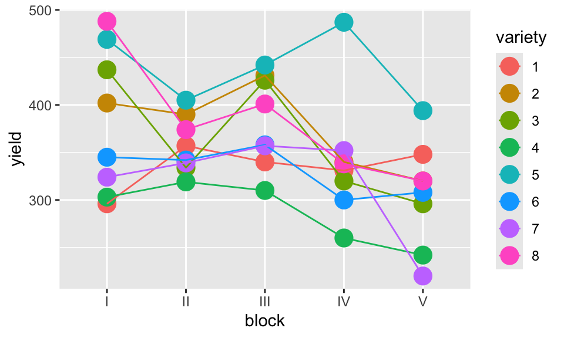
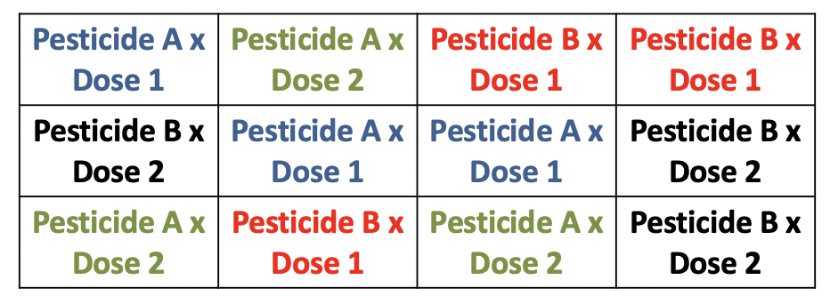
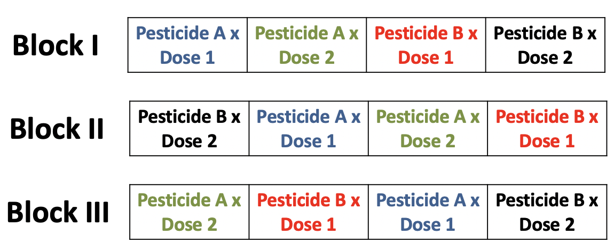
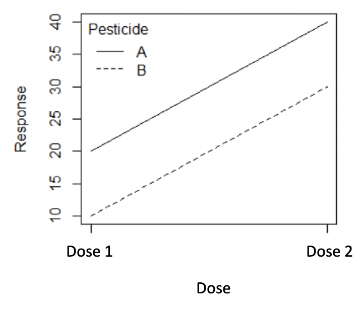
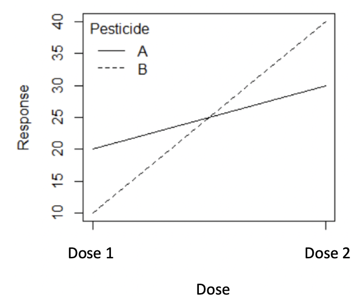

set.seed(853)
number_of_people <- 5000
population <-
tibble(
person = c(1:number_of_people),
smoking_status = sample(
x = c("Smoker", "Non-Smoker"),
size = number_of_people,
replace = TRUE,
prob = c(0.2,0.8)
)
)Experimental Studies
Establishing Causality
A treatment will often be a binary variable that is either 0 or 1.
- It is 0 if the person is not treated, which is to say they are in the control group, and 1 if they are treated.
We will typically have some outcome of interest, Y, for each person, and that could be categorical or continuous.
A treatment is causal if the outcome for a person given they were not treated, is different to their outcome given they were treated.
- If we could both treat and control the one individual at the one time, then we would know that it was only the treatment that had caused any change
The fundamental problem of causal inference is that we cannot both treat and control the one individual at the one time.
we instead compare the average of two groups — all those treated and all those not.
we estimate the counterfactual at a group level because of the impossibility of doing it at an individual level.
this trade-off allows us to move forward but comes at the cost of certainty.
we must instead rely on randomization, probabilities, and expectations.
Controlled Experiments
Controlled Experiments are a scientific test (or a series of tests) to verify how one or more conditions (treatments - variables that are controlled by the scientist) affect one or more outcome (response) variables.
We usually consider a default of there being no effect and we look for evidence that would cause us to change our mind.
Adequate planning is crucial to experimental success.
Design of experiments: can produce an experiment that efficiently answers the questions of interest, optimizing the information for the available resources.
The scientific method involves
- Stating a hypothesis
- Planning an experiment to objectively test the hypothesis
- Observing and carefully collecting data
- Interpreting experimental results (test your hypothesis)
General Considerations
Basic considerations of experimentation
Provide a valid comparison between treatments
Provide valid information on the relationship between variables of interest
Basic requisites
The experimental conditions must represent real conditions of the problem of interest
Treatment comparison must be made free from other possible explanations due to the presence of other variables (confounding)
Treatment comparison must be made with the lowest possible influence from random variation
The uncertainty level of the conclusions must be known
The experiment must be the simplest possible
Steps of Experimentation
(1) Clear and precise definition of the problem and objectives
objectives \(\rightarrow\) scientific hypotheses \(\rightarrow\) statistical hypotheses
single objective vs. multiple objectives
e.g., examine the effect of Vitamin C on the length of the odontoplasts, the cells responsible for teeth growth
e.g. determine the lethal dose of a pesticide for an agricultural pest
e.g. determine the best temperature settings so that a machine may work properly
(2) Definition of the conditions of the experiment
Controlled conditions
- e.g. greenhouses, laboratories, experimental stations etc.
Less controlled conditions
- e.g. farms, forests etc.
Research programmes
- Preliminary, main and confirmation trials
Selection programmes
- Screening, comparative and multilocal trials
(3) Identification of the variables of interest
Response variable
e.g., length of odontoplasts in guinea pigs
e.g., blood pressure rates
Treatment factor(s) and their levels
Quantitative – factor: doses of vitamin C (levels: 0.5, 1, 2 milligrams/day)
Qualitative – factor: diet (levels: natural and artificial)
Local control factor(s) and their levels
- blocks, rows, columns; nuisance factors, reflecting experimental design
Determination of the levels of a factor
Selection: obtain the best treatments within a big set of treatments
Comparison: a small group of treatments that qualitatively differ is compared to establish differences
e.g. comparison between the effects of two different diets on blood pressure
e.g., comparison of delivery method of vitamin C (orange juice or ascorbic acid)
Optimization: find the optimal level within a group of treatments
- e.g. dose-response experiments
(4) Identification of the experimental and observational unit
Experimental unit: individual or group of individuals in which a treatment is randomly applied; may give rise to one or more experimental units
- e.g. 60 guinea pigs, a plot of land with 200 trees, a section of a laboratory bench with 20 Petri dishes, etc
Observational unit: physical entity that produces a unique value for the response variable
- e.g. a single insect, a single tree, a single Petri dish
(5) Definition of the observations to be made
Observations: essential or accessory
Qualitative: presence or absence of a morphological feature,
Quantitative: weight, counts, proportion survived, proportion damaged
Ordered: degree of severity of a disease, grading scale \(\rightarrow\) relationship of order
Important things to be aware of:
The way observations will be taken
The way they will be registered
If sampling: define the number and size of samples (consider representativeness)
(6) Selection of the experimental scheme
Must be the simplest possible
Systematic experiments: must not be used
Randomized experiments: allow for the comparison of treatments, free from confounding
The Three Key Principles of Experimentation
Randomization: is the assignment of treatments to experimental units so that every unit has the same probability of receiving each treatment.
Replication: provides a measurement of uncontrolled variation; it is the application of each treatment several times, i.e. to several experimental units
Local control: is the grouping of experimental units into groups called BLOCKS, the units within a group being as similar as possible (e.g. different growth chambers, people, time periods, different trays in a lab bench, etc)
Randomization
The key to telling a causal story is the counterfactual: what would have happened in the absence of the treatment.
- This means that establishing the control group is critical because when we do that, we establish the counterfactual.
What we hope to be able to do is to find treatment and control groups that are the same, but for the treatment.
We might be worried about, say, underlying trends, which is one issue with a before-and-after comparison, or selection bias, which could occur when we allow self-selection. Either of these issues could result in biased estimators.
We use randomization to go some way to addressing these.
Randomization
To explore ideas of randomization, we simulate a population, and then randomly sample from it. We will set it up so that 20% of the population are smokers, and the rest are not.
Let’s look at population characteristics
population %>%
count(smoking_status)# A tibble: 2 × 2
smoking_status n
<chr> <int>
1 Non-Smoker 4003
2 Smoker 997Now let’s sample from the population and randomly assign a treatment and control group.
set.seed(853)
sample_size <- 1000
sample <-
population %>%
sample_n(sample_size) %>%
mutate(group = sample(
x = c("Treatment", "Control"),
size = sample_size,
replace = TRUE
))Now let’s look at sample characteristics within each group (treatment and control). Is the distribution of population characteristics reflected within each group?
sample %>%
count(group, smoking_status) %>%
group_by(group) %>%
mutate(prop = n / sum(n)) # A tibble: 4 × 4
# Groups: group [2]
group smoking_status n prop
<chr> <chr> <int> <dbl>
1 Control Non-Smoker 364 0.747
2 Control Smoker 123 0.253
3 Treatment Non-Smoker 415 0.809
4 Treatment Smoker 98 0.191Internal validity
If the treated and control groups are the same in all ways and remain that way, but for the treatment, then we have internal validity, which is to say that our control will work as a counterfactual and our results can speak to a difference between the groups in that study.
Internal validity means that our estimates of the effect of the treatment are speaking to the treatment and not some other aspect.
They mean that we can use our results to make claims about what happened in the experiment.
External validity
If the group to which we applied our randomization were representative of the broader population, and the experimental set-up were fairly similar to outside conditions, then we further could have external validity.
That would mean that the difference we find does not just apply in our own experiment, but also in the broader population.
External validity means that we can use our experiment to make claims about what would happen outside the experiment.
It is randomization that has allowed that to happen.
But this means we need randomization twice. Firstly, into the group that was subject to the experiment, and then secondly, between treatment and control.
Blocking
Often there are covariates in the experimental units that are known to affect the response variable and must be taken into account.
Ideally an experimenter can group the experimental units into blocks where the within block variance is small, but the block to block variability is large.
- For example, in testing a drug to prevent heart disease, we know that gender and age also impact the outcome. We may want to partition our study participants into gender and age groups and then randomly assign the treatment (placebo vs drug) within the group.
Often blocking variables are not the variables that we are primarily interested in, but must nevertheless be considered. We call these nuisance variables.
Blocking Example
Example 1. An agricultural field study has three fields in which the researchers will evaluate the quality of three different varieties of barley. Due to how they harvest the barley, we can only create a maximum of three plots in each field. In this example we will block on field since there might be differences in soil type, drainage, etc from field to field. In each field, we will plant all three varieties so that we can tell the difference between varieties without the block effect of field confounding our inference. In this example, the varieties are nested within the fields.
# A tibble: 9 × 4
Field Plot Variety Quality
<dbl> <dbl> <chr> <chr>
1 1 1 A value
2 1 2 B .
3 1 3 C .
4 2 1 A .
5 2 2 B .
6 2 3 C .
7 3 1 A .
8 3 2 B .
9 3 3 C . Main types of blocks
Natural divisions
Young animals – litters, egg masses
People or animals – gender
Continuous gradient of change
- Plots on the field – declivity, humidity, fertility
- People or animals – age, weight, size
- Severity of disease on the field
Experimental management
- Laboratory procedures – technician, day, stand
- Material availability
Randomized Complete Block Design
The aim is to have heterogeneity between blocks and homogeneity within
e.g. a greenhouse with a temperature gradient, different days, different observers
Block is the replicate
The number of experimental units per block is equal to the number of treatments and every treatment occurs once in each block, the order of the treatments within a block being randomized
Laboratory chamber with a humidity gradient inside

Laboratory chambers with homogeneous temperature and humidity inside

A field with a fertility gradient

A greenhouse with a temperature gradient during the day

The dataset oatvar in the faraway library contains information about an experiment on eight different varieties of oats.
The area in which the experiment was done had some systematic variability and the researchers divided the area up into five different blocks in which they felt the area inside a block was uniform while acknowledging that some blocks are likely superior to others for growing crops.
Within each block, the researchers created eight plots and randomly assigned a variety to a plot. This type of design is called a Randomized Complete Block Design (RCBD) because each block contains all possible levels of the factor of primary interest.
Randomized Complete Block Design - Example
data('oatvar', package='faraway')
ggplot(oatvar, aes(y=yield, x=block, color=variety)) +
geom_point(size=5) +
geom_line(aes(x=as.integer(block)))
Factorial Experiments
There may often be more than one factor of interest to the experimenter
Experiments that involve more than one randomized or treatment factor are called factorial experiments
In general, the number of treatments in a factorial experiment is the product of the numbers of levels of the treatment factors.
The disadvantage of this is that the number of treatments increase very quickly.
Example: Pest control
- Factor 1: two pesticides (A and B)
- Factor 2: two doses
- The experiment has a total of \(2\times 2 = 4\) treatments
Example: The Tooth Growth data
- Factor 1: two deliveries of vitamin C (orange juice, ascorbic acid)
- Factor 2: three doses (0.5, 1, and 2 mg/day)
- The experiment has a total of \(2\times 3 = 6\) treatments
For the Pesticide example, suppose 3 replicates and a completely randomized design

For the Pesticide example, suppose 3 replicates and a randomized complete block design

The major advantage of factorial experiments is that they allow for the detection of interactions.
Two factors are said to interact if the effect of one, on the response variable, depends upon the level of the other.
If they do not interact, they are said to be independent.
Other terms that are synonymous with “interacting factors” are dependent and nonadditive.
Using an Interaction Plot

- A set of parallel lines indicates no interaction

- Clearly an interaction as lines have different slopes
Steps of Experimentation
(7) Conduction of the experiment
Bias-free procedures
Also consider
Entity carrying out the experiment
Place of execution
Start and end dates
Experiment relevance
Expenses
(8) Data analysis and interpretation of results
Analysis in accordance with the experimental design
Interpretation of the results within the experimental conditions, tested hypotheses and related to the previously established facts
Consequences and probabilities of a wrong decision